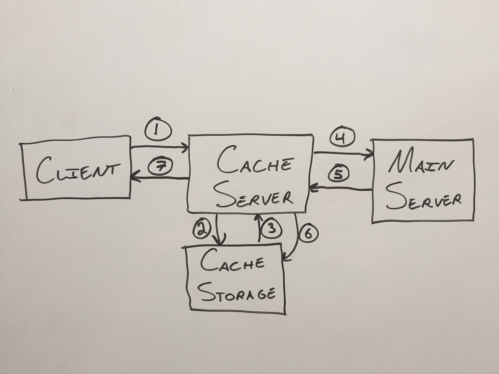
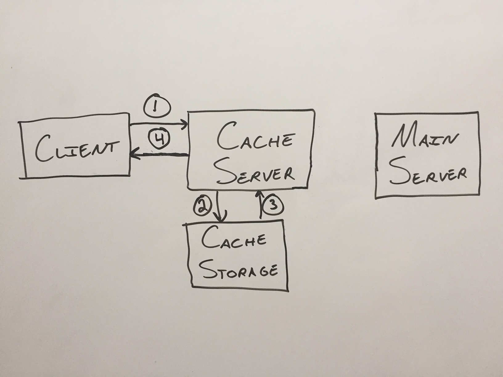
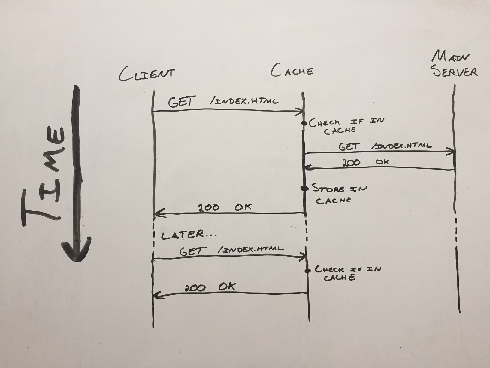
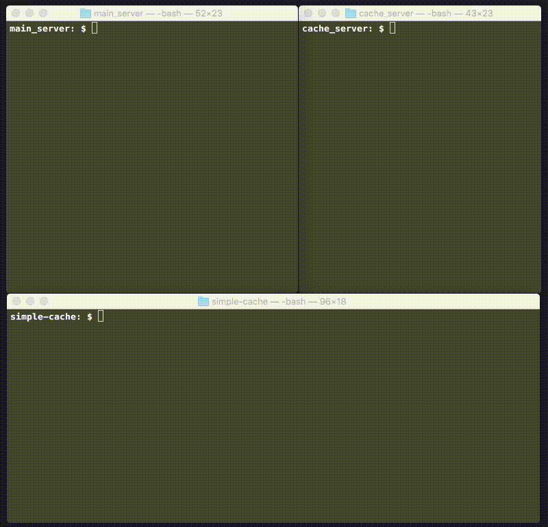

Building a Simple Cache Server in Python
May 26, 2018 · 1239 words · 6 minutes read
I’m a fan of small toy projects that have the sole purpose of demonstrating a concept. This is a small project that demonstrates how a cache server works.
I think it’s important to balance toy projects with getting exposure to production-level code. While this project has been helpful for understanding the idea, an open source project like [Squid-Cache] (https://github.com/squid-cache/squid) is definitely on my reading list!
At the very simplest level, an HTTP server responds to requests. Let’s take a look at a simple server that can respond to GET requests:
Here’s a pseudo-code for a very basic HTTP server that can respond to GET requests:
- Wait for a request
- When a request comes in, check what file it's looking for.
- If we have it:
- Great! Send it.
- If we don't have it:
- Send back a 404.
Caching
At the very simplest level, a cache server is responsible for serving items that have already been requested from the main server. Doing this gives the main server a break from having to respond to every request, and the workload can be shared by the cache server.
Here’s the pseudocode for a very basic cache server:
- Wait for a request
- When a request comes in, check what file it's looking for.
- If we have it stored in the cache:
- Send it.
- If we don't have it in the cache:
- Request it from the main server
- If the main server has it:
- Store a copy in the cache
- Send the file to the client
- If the main server does not have it:
- Send a 404 to the client
For instance, here’s a diagram of fetching an item from a cache server when the cache server has not already saved the item and the item exists on the main server.

Here are the steps for the first time an item is requested:
- Client requests item
- Cache server checks if it’s stored in the cache
- The item is not found
- The cache server requests the item from the main server
- The main server sends the item back
- The cache server saves a copy of the item
- The cache server sends the client the item
We could definitely swap 6 and 7, especially if we’re trying to send the item back to the client quickly.
Here’s a diagram of a subsequent request for the same item:.

Here are the steps for the future request:
- Client requests item
- Cache server checks if it’s stored in the cache
- The item is found
- The cache server sends the client the item
Although it looks like the main server is lonely to the right, it didn’t have to worry about the client’s request at all. Lucky main server!
Here’s another way of looking at the problem. Here, the vertical axis is time increasing as you go down, and the horizontal arrows are the requests back and forth. The same actions are taken in the same exact order, but the actions are separated vertically by when they happen:

This isn’t too bad! Let’s build a very simple version in python. We’ll use joaoventura’s simple python webserver as our simple http server and a template for our cache server.
Here’s how we can set the server up to abstract away the caching in the main process:
# cacheproxy.py
"""
Implements a simple cache proxy
"""
import socket
from urllib.request import Request, urlopen, HTTPError
import argparse
def main():
# Get port command line argument
parser = argparse.ArgumentParser()
parser.add_argument('port')
args = parser.parse_args()
# Define socket host and port
SERVER_HOST = '0.0.0.0'
SERVER_PORT = int(args.port)
# Initialize socket
server_socket = socket.socket(socket.AF_INET, socket.SOCK_STREAM)
server_socket.setsockopt(socket.SOL_SOCKET, socket.SO_REUSEADDR, 1)
server_socket.bind((SERVER_HOST, SERVER_PORT))
server_socket.listen(1)
print('Cache proxy is listening on port %s ...' % SERVER_PORT)
while True:
# Wait for client connection
client_connection, client_address = server_socket.accept()
# Get the client request
request = client_connection.recv(1024).decode()
print(request)
# Parse HTTP headers
headers = request.split('\n')
top_header = headers[0].split()
method = top_header[0]
filename = top_header[1]
# Index check
if filename == '/':
filename = '/index.html'
# Get the file
content = fetch_file(filename)
# If we have the file, return it, otherwise 404
if content:
response = 'HTTP/1.0 200 OK\n\n' + content
else:
response = 'HTTP/1.0 404 NOT FOUND\n\n File Not Found'
# Send the response and close the connection
client_connection.sendall(response.encode())
client_connection.close()
# Close socket
server_socket.close()
Depending on how fetch_file is implemented, this could just be a regular server that serves local files. We can make this more interesting by implementing the caching at this point:
def fetch_file(filename):
# Let's try to read the file locally first
file_from_cache = fetch_from_cache(filename)
if file_from_cache:
print('Fetched successfully from cache.')
return file_from_cache
else:
print('Not in cache. Fetching from server.')
file_from_server = fetch_from_server(filename)
if file_from_server:
save_in_cache(filename, file_from_server)
return file_from_server
else:
return None
This matches up exactly with our pseudocode. If we have it stored in the cache, return it. If we don’t have it in the cache, request it from the main server. If we get it from the main server, save a copy in the cache and return it, but if we don’t get it back from the main server, return None.
Since above we’re checking on the return value from this function to decide if we return a 200 or 404, returning None from this function will correctly return a 404 to the client.
Let’s take a look at what a simple fetch_from_cache implementation might look like:
def fetch_from_cache(filename):
try:
# Check if we have this file locally
fin = open('cache' + filename)
content = fin.read()
fin.close()
# If we have it, let's send it
return content
except IOError:
return None
This is about as simple as it gets! Check the local cache/ directory for the file, read it, and return it. If we run into any “file not found” issue, we’ll just return None.
Next, let’s take a look at a simple implementation of fetch_from_server:
def fetch_from_server(filename):
url = 'http://127.0.0.1:8000' + filename
q = Request(url)
try:
response = urlopen(q)
# Grab the header and content from the server req
response_headers = response.info()
content = response.read().decode('utf-8')
return content
except HTTPError:
return None
Once again, pretty simple! It creates a url to request from the main server running on localhost:8000, then it attempts to get the file from that endpoint. If it runs into a 404 HTTPError, it simply returns None, which is then passed up and results in a 404 being returned from the cache server.
Finally, let’s take a look at save_in_cache, which allows us to store a local copy to serve on the next duplicate request:
def save_in_cache(filename, content):
print('Saving a copy of {} in the cache'.format(filename))
cached_file = open('cache' + filename, 'w')
cached_file.write(content)
cached_file.close()
Very simple! It takes the filename and content and writes it in the cache/ directory.
Putting this all together, we have a simple cache server! Here’s what it looks like when you run it for the first time:

Note that the main server in the top left responds to the first curl, but the cache handles the second one!
How could we improve this further? First, our simple server only responds to GET requests, and it doesn’t pay any attention to cache-related headers. Furthermore, there’s no expiration date for the files it saves, so the index.html it saves today would be served from the cache forever. For showing the main functionality, this works, and we can add more complexity in the future.